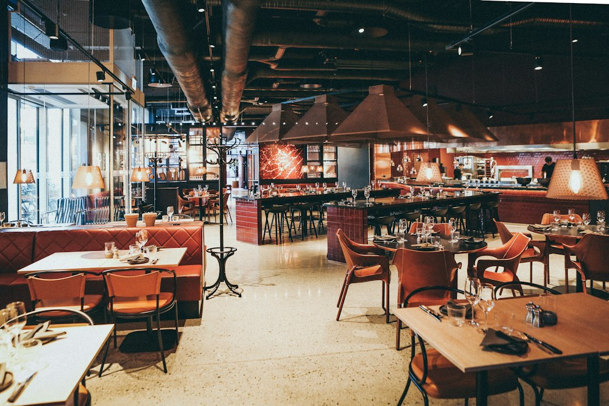
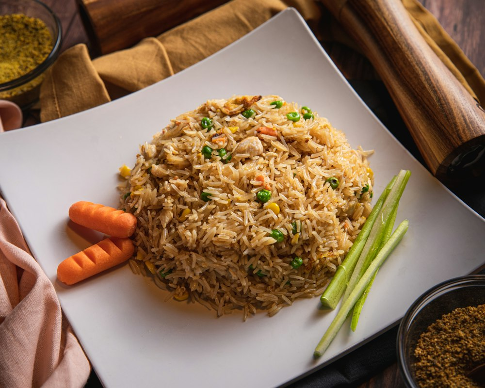

镇店之宝
水晶虾饺皇
薄如蝉翼的水晶皮，裹着整颗弹牙鲜虾。一口咬开，是广府茶楼里最讲究的那口"鲜"。


几道绕不开的岭南味道，藏着广东人对"鲜"的极致讲究。
薄如蝉翼的水晶皮，裹着整颗弹牙鲜虾。一口咬开，是广府茶楼里最讲究的那口"鲜"。

粒粒分明、色泽金黄，青豆玉米点缀其间，一勺入口全是镬气与满足。

薄皮裹鲜美肉馅，浮在清甜上汤里。一碗云吞（广东馄饨），是老广从小到大的温柔记忆。

外皮金黄酥脆、肉汁丰盈，趁热一口，满嘴都是香气。

"宁可食无菜，不可食无鲜"，白灼最能见虾的鲜甜，蘸点豉油便是人间美味。
广府、潮汕、客家，三种性格，三样风情。